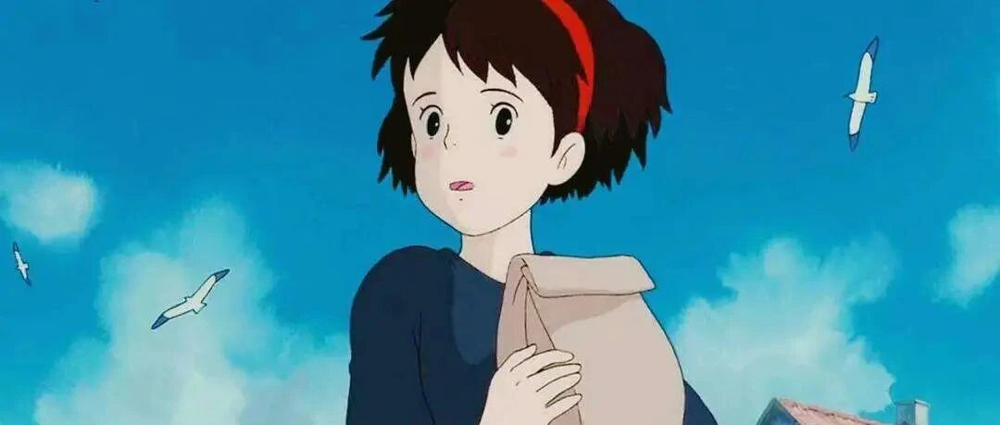

那个秋秋呀，愿成为你的宝藏女孩
和 我 一 起 治 愈 生 活

图：@网络
文：@秋秋
大家好，我是秋秋。
今天是一篇碎碎念，关于我的一些想法瞬间。从大学之后，感觉自己成长了很多。
很多想法和以前不一样，很多却依旧坚持，今天就说一说吧。

1. 关于职业
最开始我也很迷茫，小学的时候是想当一名作家。那时候我们镇上有个书店，一本书只要3、5块钱，特别厚的作品集，才只要8块钱。
所以我爸妈只要给我零花钱，我就去买书，看痞子菜、小妮子、饶雪漫这些书，而且一看就是厚厚一大本。

看的多了，自己也想写，当时我家有电脑，就主动去签约榕树下、起点中文这些，还写过几篇万字的短篇。
我印象中是千字一块，那个夏天，没有空调，家里的风扇转的慢慢的，我在客厅敲下一个又一个字，还给我妈说，我要靠写作赚钱啦！
后来我还专门买笔记本用手写，前面还会有模有样的划分章节。写完之后就拿给同桌看，还在我们班级传阅。
有的同学还会手写在文章后面评论，大多数都是说，写的太好了，嘻嘻，继续写下一章。还有对剧情进行评论的，希望女主角能和男主角在一起。
想想那个时候真开心。

紧接着上初高中了，就开始给各种杂志期刊投稿。最经常去我们学校的收发室，因为经常给杂志邮寄手稿。
印象最深的是中了一次男生女生，不过要交什么修改费，想着是骗人的，就没有了下文。
然后高二的时候我们市区举办了写作比赛，也拿了一个奖，作品上过报纸，再就是高三，这件事就告一段落。
现在想想我很小的年纪为什么喜欢写作，应该是三四年级的时候，我们老师特别喜欢让我们整理阅读笔记。
就是把书上的优美语句有摘抄到一个本子上，然后写的整齐漂亮就能被夸奖。我那时候每次都是优秀。
哈哈，真的就是手账原型。把读书笔记写的漂漂亮亮，自己贴上贴纸，配上插图，用不同颜色的笔写标题…..

所以读了一些书之后，也会有冲动写下来。
大学的时候也坚持过一段时间，毕业之后，我突然觉得当个作家太难了。那个时候，流行的也不再是什么作家这些，而是新媒体，比如咪蒙、胡辛束、入江之鲸这些。
所以一毕业我就去做了新媒体，后来接触编导，能写脚本，能出门拍摄，感觉更适合我，就做到了现在。
和文字有关的事情我觉得我都还挺喜欢，所以对于这件事作为我一生的职业从没纠结过。
2.关于赚钱

我觉得我是一个从小就喜欢赚钱的人。这样说好像有点俗气，但是赚钱养活自己，不依赖别人，我觉得是一件很酷的事情。
说起我的赚钱之旅，也是从小学。
在我小学毕业的时候，去卖过豆浆机和洗衣机，一天20块钱，并且拿到了工资。
我倒是从小没上过补习班这种，写作业又快（从小学到高中之前都是班里前三）所以时间就很多。
当时就去人家店里帮着看店，有人询问就介绍下产品，那个店距离我家也不远所以也很安全。

之后初中毕业，我是去我姑姑家的面条店刷盘子，高中毕业的时候，是去辅导班打工，帮忙招学生。反正以上的我都没觉得累，也不是缺钱，就是觉得好玩。
大一的时候，学校组织卖义工笔，5块钱2支，成本是1元一支，就跑到各种小店去推销，一天赚了50块。
大二的时候，在简书上写文章，一篇打赏50元。
大三大四考完研，没考上第一志愿调剂了非全，就直接去做了编导。
后来自己学习了剪辑，接单子每个月也能有5000。
所以我觉得赚钱一定不是一个苦思冥想又很累的事情。大多数的时候取决于你有兴趣，并且敢于尝试。
3.关于生活

// 关于名字：
大家知道我叫秋秋，但是不知道这个名字来源。
其实这是我家猫的名字哈哈，最开始是我在我微博注册，什么名字都已经被占用了，我就用了它。
之后微博有个小姑娘给我私信说：
我很喜欢你，感觉你的人就像你的名字一样，秋天的阳光，不是很刺眼又很温暖，给人很舒服的感觉。
我就想，我就应该做一个不急不躁，好好写干货，给别人带来温暖的人。所以秋秋对于我来说，就是这个意思，我也一直坚持到现在。
而我家猫为什么叫秋秋，因为之前养过一只猫叫球球，为了纪念它。

// 关于朋友：
我的闺蜜级别的朋友很少，大概是3年才能遇到一个这种，但是一玩就能玩很久。而我的朋友很多。
不过我可能从小就没有注意过交朋友这件事，就是不管别人喜不喜欢我、朋友多不多，我都是会坚持自己。

// 关于租房：
也是想写什么就写什么了。
我最开始来北京的时候，是和我大学好朋友一起住一间，当时3000块钱，一人一半。住了3个月左右搬家了，房租3800。然后住了10个月搬家了，房租快4000，然后一直到现在，房租6000，住了半年多。
我觉得租房是一件很麻烦又很快的事情，你想的时候会觉得好麻烦啊，其实真的到搬家到那一天，一天就搞定。
而在北京租房，我一开始真的被房租吓掉脑壳，现在，房租1万我都不稀奇了。
不过我还是建议租房租的距离公司近一点，现在我每天10分钟就到公司，感觉省去好多烦恼。

//关于旅行：
我觉得我胆子就是贼大的那种。
小时候7.8岁我刚学会骑自行车，就自己一个人从我家骑车去了我姥娘（外婆）家，然后我爸妈都不知道以为我丢了，着急的哟。后来在我外婆家找到我，又高兴又生气，打了我一顿又夸了我一顿。
所以我是一个特别有探索欲的人，就很想到处去看看。
大学的时候比较空闲，每年都会出去玩2次。第一次出国是毕业旅行，现在想想觉得有点厉害，自己一个人去了泰国哈哈。

不过总体我觉得旅行是一件非常有趣的事情，能遇到很多不同的人见不同的事，关键是吃不同的美食。
今年过年我和我男朋友一起去云南玩，时隔4年，我竟然带着他找到了我当时吃过的一家特别好吃的凉鸡米线。
所以如果接下来我给自己gap year的时候，也会出去多玩玩～

//关于生活：
以前的我还是蛮世俗的，也是因为想和我爸妈对着干，所以这辈子都不想做2个职业，老师和公务员。
不过现在我就觉得做什么都可以，喜欢最重要。
我讨厌的是大人嘴里说的稳定、赚钱、有寒暑假这些事，觉得太功利，我不会为了这几个好处就去工作。所以当别人说有年终奖、有寒暑假我都觉得你到底是喜欢教学这件事还是喜欢寒暑假啊？
我可不希望我有个为了寒暑假来教我功课的老师。
只是在很小的时候，还是要有点理想和信念的。永远记住没有喜欢，做什么都不快乐。还有就是什么时间什么能力去做什么事就可以。

最后，今天的碎碎念很长，但是除了关于学习的一些文章，这些碎碎念更能拉近我们的距离。
不管我做什么，我都希望自己的文字能带给大家一点温暖和力量。
这样，就够啦～
其他文章推荐：

原创文章，转载请告知本人并标注来源
工作联系：17865514429 （微信）
请注明来意 :)
@微博：秋秋一日甜
喜欢记得星标，让我们一起成长